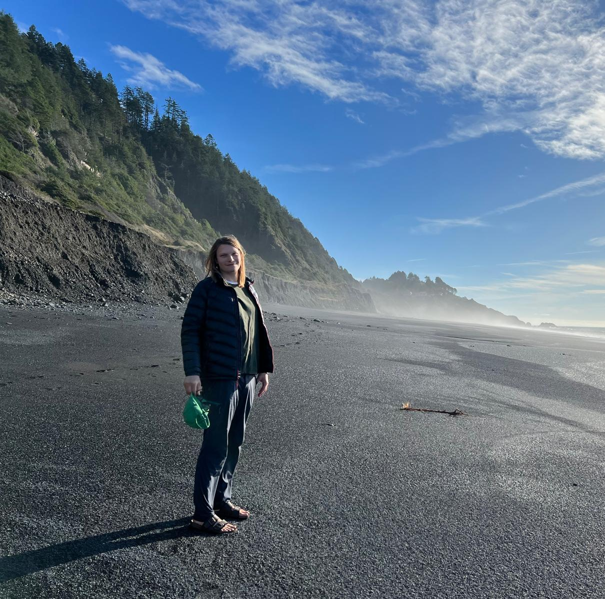

The Studio
I make ceramics for everyday living—lamps that warm a room, tableware for daily use, and sculptural pieces that hold their own on a shelf. Each piece is shaped by hand, fired high, and meant to be lived with, not just admired from a distance.
Self-taught with over a decade of experience, I'm always pushing into new territory—lighting, sculpture, and forms that grow more complex over time. Nature is my constant reference—organic curves, texture, the way light moves across a surface—and no two pieces are ever quite the same.
Email — rayne.m.milner@gmail.com
Instagram — @five_ceramics